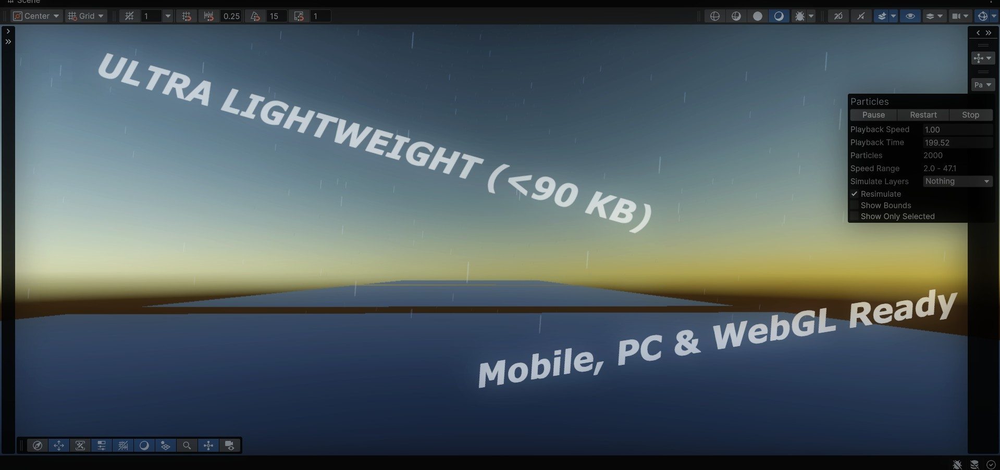
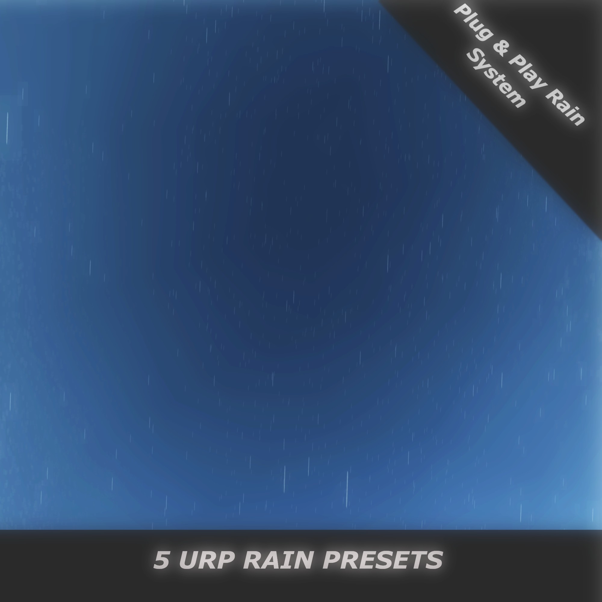
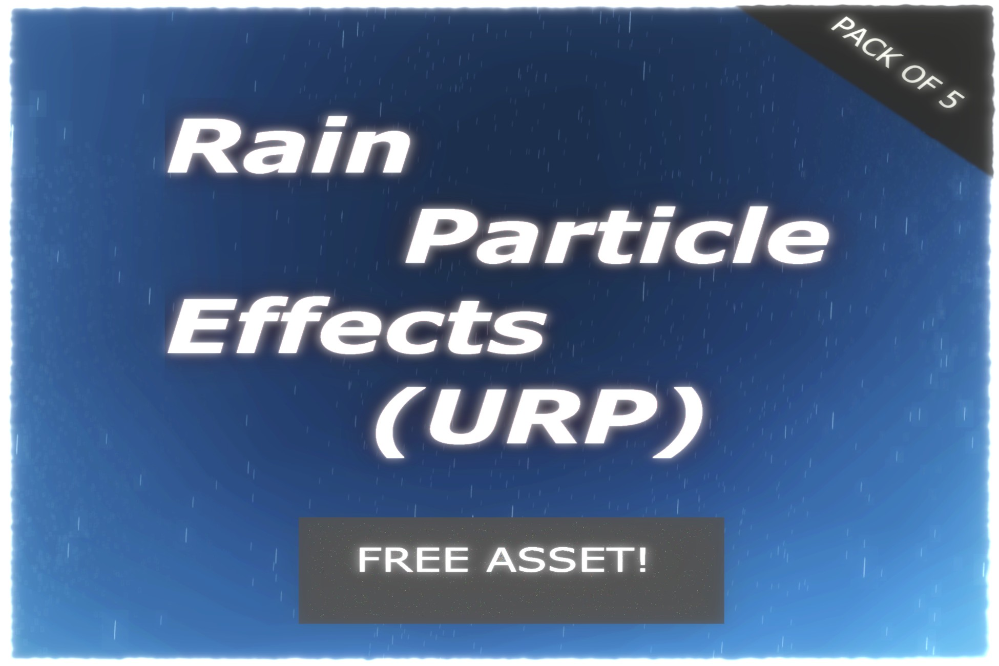

Gallery



A lightweight, plug-and-play collection of rain particle systems for environmental effects, scenes, and atmospheric weather.

Rain Particle Effects (URP) contains carefully crafted, ultra-lightweight weather presets ranging from light drizzle to heavy downpours. Designed specifically for Unity's Universal Render Pipeline, every prefab is optimized for instant drag-and-drop setup with zero performance overhead.
| Package Size | < 90 KB (89.1 KB) |
| Presets Included | 5 |
| Render Pipeline | Universal Render Pipeline (URP) |
| Scripts Required | None (Zero Code) |
| Target Platforms | PC, Console, Mobile, WebGL |
| Asset Type | Particle System Prefabs |

